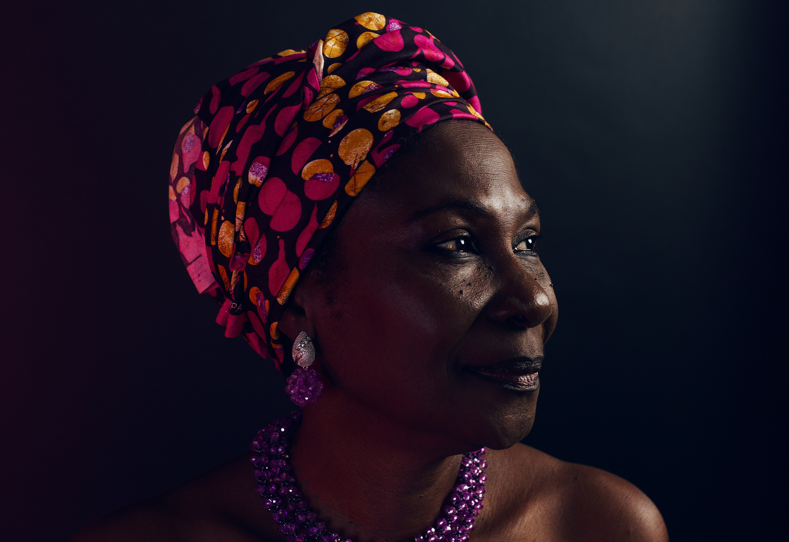
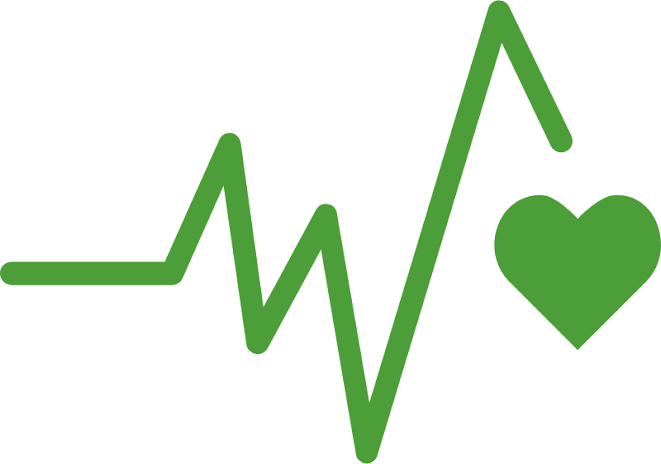
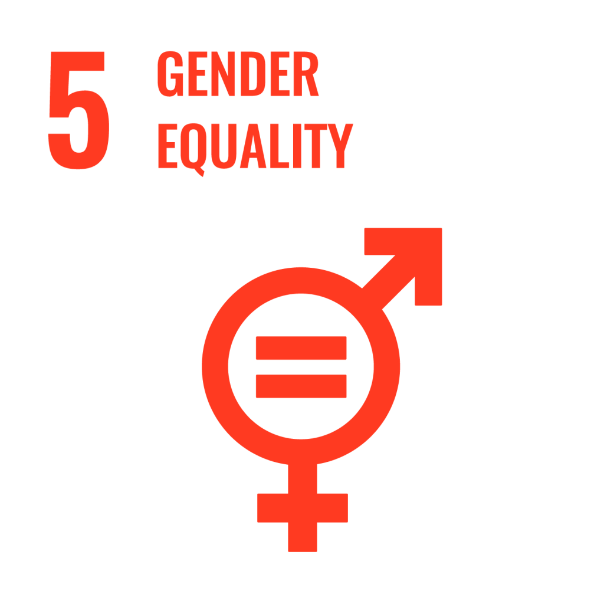
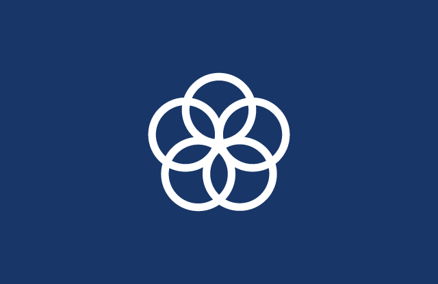
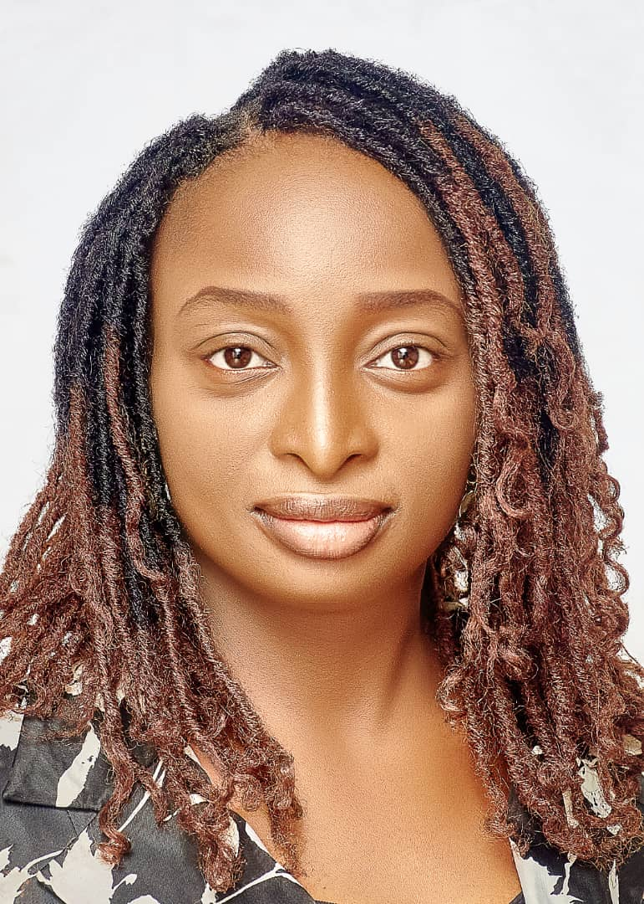

Born of love. Built on loss. Carried forward by purpose.
Every programme we run traces back to one woman, Nnenna, and the promise made in her memory.

Mama Nnenna's legacy and the founder's journey
In 2018, our founder lost her beloved mother, Nnenna, to complications from high blood pressure and diabetes.
Mummy was the glue that held our family together, a woman with the biggest heart, extroverted and straightforward, who taught the value of having a skill as a woman. She always said: "Every woman should learn one handwork, as it may save her."
She cared so deeply for women and children that she was fondly called "Mama'n Yara" in Hausa, meaning "Mother of Children." To many, she was Mama Asika. To her daughter, she was "My Mrs. Chief." She embodied compassion, resilience and service to others in every way.
When she passed, our founder felt a deep calling to carry her mother's heart for women forward, to build something meaningful in her honour, a platform that would continue her legacy of care, empowerment and advocacy.
At the time, she was running Obiianuju Media Limited (OML) and serving as a facilitator for Google's Digital Marketing Skills Program. She noticed something striking. So many of her trainees were women, eager to learn but unsure how to apply digital skills to transform their businesses and careers. That observation became the seed of the Obiianuju-Nnenna Media Foundation, a bridge between what women already knew and what they still needed, to build a life of their own choosing.
A world where every woman is healthy, empowered and unstoppable.
To build women through health, education, digital and economic empowerment, and leadership development, strengthening the communities they lead and hold together.
What guides every programme we run.
Compassion
We lead with the same heart Mama Nnenna led with, care that asks nothing in return.
Commitment
We stay with communities long after the outreach ends.
Empowerment
We equip women with skills, not just support, so change outlasts us.
Equity
We meet women where they are, without judgement about where they started.
Respect
Every woman we work with is treated as the expert on her own life.
Women at every stage of the journey.
We start with the individual woman, with her health, her skills and her confidence. As she grows, so does her household and her community. Over time this compounding effect becomes sustainable impact: women who no longer need us to keep growing.
Our work maps to the UN Sustainable Development Goals.
Tap any goal to read it in full on the United Nations website.

03Good Health and Well-being 04Quality Education
05Gender Equality 08Decent Work and Economic Growth
17Partnerships for the GoalsThe Sustainable Development Goals icons are the property of the United Nations.
Governance grounded in values, guided by purpose, committed to legacy.

Obiianuju Asika
Board Member, Founder & CEO
Evarist Asika
Board Member
Emmanuel Asika
Board Member
Dr. Joana Idakwo
Advisory Board Member
The people carrying the work forward every day.
Vivian Achu
Director of Strategic Partnership & Development

Oriyomi Olowolagba
Head, The Resilient Woman Network
Working alongside institutions who share our mission.
The Obiianuju-Nnenna Media Foundation collaborates with schools, community groups, corporate partners and government bodies across the FCT. If your organisation shares our commitment to women and girls, we would love to hear from you.
Partner With Us